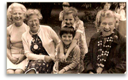
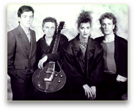
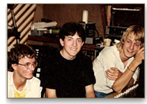
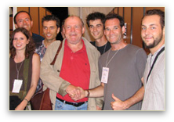

INTERNATIONAL CHANSONNIER
|
      |
Tout le monde a au moins une fois lu le nom de Mark Brenner sur un programme de concerts. Et puis il y a ceux qui savent, un public de fidèles dont le cercle s'agrandit à chaque scène. En 1996, un de nos voisins anglais fuit la Grande-Bretagne (pour des raisons tout à fait personnelles) à bord d'un petit Cessna - avion biplace et monomoteur fort répandu dans les aéroclubs. Après une première escale à Cherbourg pour acheter des Gauloises (« the taste of France »), l'appareil décide fort opportunément de finir son vol à La Teste, et c'est ainsi que Mark Brenner débarque en France et dans le Bordelais. L'appareil vendu, l'individu sort sa guitare et commence à faire la manche à Arcachon, au Cap-Ferret, découvre à son grand étonnement que l'arrière-saison n'est pas beaucoup plus clémente ici qu'au sud de l'Angleterre, et entame le plus improbable plan de carrière de tous les pop-singers internationaux d'obédience classique. Nous sommes alors en 1997. Entre-temps il y eut une tournée en Autriche, la première. Plus tard, les bals de l'ambassadeur... Et, tout du long, une relation privilégiée avec ce pub d'« ambiance » qu'est le Connemara, dont la clientèle de grands gaillards sensibles aime écraser une larme sur une balade de belle facture, pourvu qu'elle soit mélancolique et dansante. L'année 2005 a été particulièrement riche en événements. On a vu au printemps le lancement de l'album LUNATIC (sur lequel Mark joue quasiment tous les instruments) ainsi que le DVD "Live au Château Fourney". En juillet, à l'invitation du metteur en scène Eric le Collen, Mark a composé et interpreté la musique pour un spectacle son & lumière pour la ville de Pons en Charente. Le 10 août le Mark Brenner Band a assuré la première partie du concert de Joe Cocker au Stade Vélodrome d'Arcachon devant un public de 5 500 personnes. 2006 il sort un deuxième album studio, "Lovers & Friends", un véritable melting pot d'influences et de styles. 2007 est marqué par un concert au prestigieux Château de Versailles, Château Yquem, puis la Fête de la Fleur au Château Smith Haut Lafitte. Puis, en 2009 il a animé l'avant-match des Girondins de Bordeaux, devant une foule de 85 000 personnes rassemblé sur la Place des Quinconces. En 2010 il assure la première partie de Pascal Obispo, marquant le coup en invitant avec une troupe de danseuses Bollywood sur scène ! Logique, car il sort début 2011 un album intitulé "INDIAN SUMMER", mélangeant des sonorités indiennes, de la World Music, électro, folk et jazz. L'album a été classé parmi les top 40 albums Musique du Monde sur iTunes France. 2012 sera assurément un grand cru. En juillet, Mark et ses musiciens ont participé à la mise à l'eau de l'Hermione, le navire mythique qui a été entièrement reconstruit à Rochefort. Le spectacle émouvant de sa première sortie sur la Charente a attiré quelques 65 000 personnes sur les berges du fleuve. En Août, la collaboration entre Mark Brenner Band et Bruno Edjenguélé a rencontré un énorme succès lors du Festival Un Piano Sous Les Arbres à Lunel-Viel, avec un répertoire taillé sur mesure sur le thème "Motown & Soul". Sans production et sans tourneur, le groupe fait son chemin, sort des albums (trois, plus un DVD) d'une excellente facture de production (le premier fait intervenir le producteur Chris Birkett, celui de Sinead O'Connor pour « Nothing compares »), et touche ceux qui l'écoutent sans arrière-pensée. Mêlant sans complexe les reprises et les compositions personnelles, le répertoire a la patine d'un demi-siècle de musiques pop, qui se décline en version électrique et/ou acoustique. Souvent, une composition accroche l'oreille en donnant l'impression agréable qu'on l'a toujours connu, qu'il doit s'agir de la « face B » oubliée d'un artiste qu'on a préféré, un Elvis Costello, un McCartney d'après les Beatles arrangé et chanté par un autre, un Stereophonics apocryphe... Une relation très interactive, sentimentale, s'instaure avec le public, dont certains éléments, alertés par le site constamment réactualisé (www.mark-brenner.com) et par les newsletters personnalisées, n'hésitent pas à organiser leurs déplacements pour le suivre à l'étranger. Et voilà que Mark, entouré d'un panel de musiciens de haute qualité, devient une espèce de star internationale d'un circuit unique, qu'il a tracé rien que pour lui au fil de ses rencontres. Ce type aurait pu être beaucoup de choses, mais, entouré de musiciens dans l'atmosphère chaleureuse d'un concert il en émane un charisme qui suggère fortement qu'il n'a pas manqué sa voie.
Antoine De Baeke |